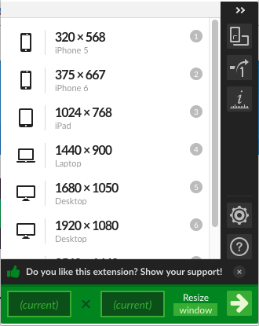

ページTOPに戻りやすくしました。
「モバイルファースト」でのレイアウトを行なったもの、ユーザビリティに関して、 問題点がひとつありました。スマホ画面で本ブログを閲覧した際、ページ下までスクロールした際に、 ページTOPに戻れませんでした。早速、スクリーンの右下に「ページTOP」へ戻るボタンを配置する ことにしました。仕様としては、
- ページをある程度スクロールさせた際、ボタンが現れる
- ページTOPに戻る際はスムーズにスクロールさせる
ページのbody要素の最後に下記ソースを追加します。
<p id="page-top"><a href="#"><i class="fas fa-arrow-circle-up"></i> ページTOP</a></p>
</body>
スムーズにスクロールさせるスクリプトも記述し、以上で完成です。
$(function() {
var topBtn = $('#page-top');
topBtn.hide();
//スクロールが500に達したらボタン表示
$(window).scroll(function () {
if ($(this).scrollTop() > 500) {
topBtn.fadeIn();
} else {
topBtn.fadeOut();
}
});
//スクロールしてトップ
topBtn.click(function () {
$('body,html').animate({
scrollTop: 0
}, 500);
return false;
});
});Webブラウザでスマホ、タブレット画面のサイズでチェックする方法
Webサイトの動作確認は、端末別、OS別、ブラウザ別に行うことが必須です。 現状では、新しい仕様を加えた際は手持ちの端末を仕様して、できる限りの確認を行なっています。 ただ、今回作成したサイトは、レスポンシブ対応のhtml、cssファイルを使用していますので、 ブラウザの幅を合わせるだけである程度の確認ができるのも事実です。 ということで、簡易的な動作確認用としてChromeの拡張機能の「Window Resizer」を使用しています。
デフォルトでは、iPhoneやiPad、Raptop、Desktopなどのスクリーンサイズがプリセットされていますが、 確認したいサイズに合わせて、設定画面から追加することも可能です。
本日のミニ備忘録
午前中はプレゼンテーションに参加、午後は明日の3分間スピーチの準備とD-postのカスタマイズは並行して 行えないと判断したため、Blogの細部の見直しを進めました。今週中に仕上げる予定でしたが、明日は会社説明会が急遽入ったため、 スケジュールの見直しが若干必要になることも想定に入れておきます。